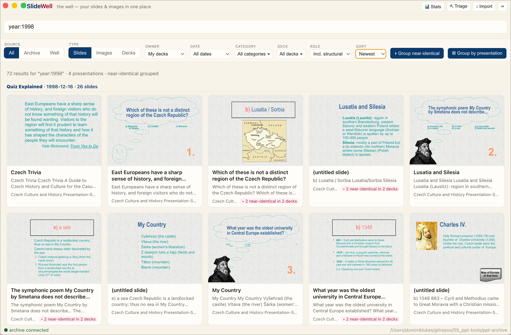

Every slide and image you've ever made — searchable, in one place, on your Mac.
macOS · open source (MIT) · your files never leave your computer.

Slide text and OCR across your extracted PowerPoint archive, the images inside those slides, and the net-new images you collect — all from one search box.
Browse the same library three ways: individual slides, standalone images, or whole presentations by their title slide with metadata.
Import a file or a whole folder; SlideWell extracts the text, structure, slide renders, and embedded images and indexes them for search.
A screenshots folder (e.g. OneDrive) is scanned recursively and OCR'd, so you can search the text inside your screenshots.
Sweep through 6-up, select the ones worth reusing into your well and dismiss the rest. Decisions are remembered, so the next pass only shows what's new.
Clips get a poster frame and inline playback; keep the ones you'll reuse.
Copy a slide's image as WebP (straight into TalkWeaver) or as PNG, or copy its text, its structure, or a reference.
Open any slide in the order of its whole presentation, and pull from any of them.
No cloud, no account. The index lives on your machine and your files stay where they are.
macOS: open the .dmg and drag SlideWell to Applications.
The app isn't notarised yet, so the first launch is blocked — right-click the app and choose
Open, then Open again at the prompt.
(Or in Terminal: xattr -dr com.apple.quarantine "/Applications/SlideWell.app".)
Early release: the download isn't code-signed or notarised yet, so macOS will warn you the first time (that's the step above, not a problem with the app). It's built automatically and still settling — if anything misbehaves, please open an issue on GitHub.